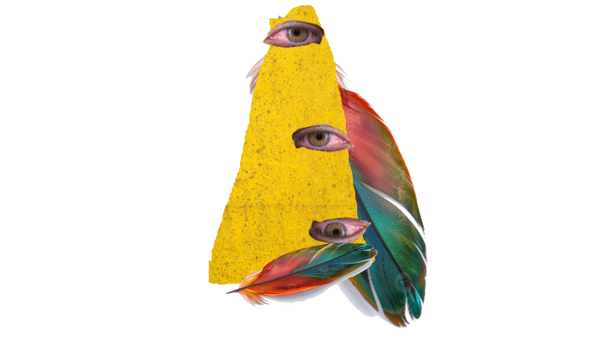
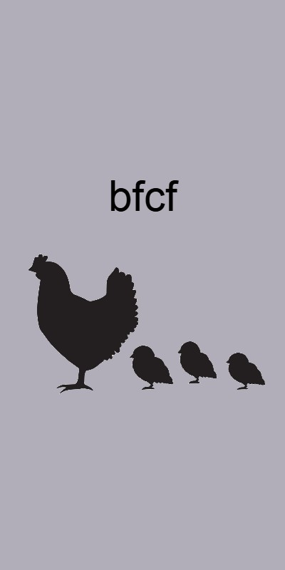
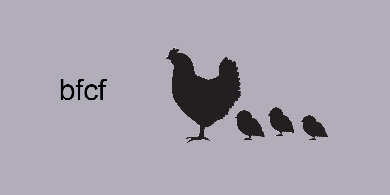
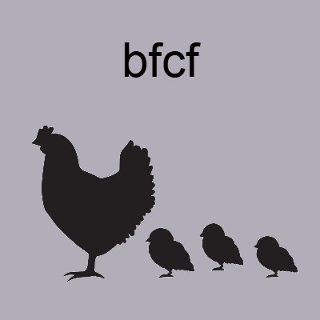

Velkommen til BFCF's offisielle nettside utleie.
Hei. Jeg er Martin og skaperen av denne prototypen.
Tidligere har nettsidene mine krevd mye grunnleggende arbeid.
Dette prosjektet handler om å unngå de tunge første stegene og å prioritere innhold.
Hvilke ting må erstattes? Hovedsakelig farger, bilder og tekst. Dette betyr at mest sannsynlig alt må erstattes, bortsett fra struktureringen
Bilder er en viktig del av nettsider. Hvordan skal de brukes her?
Vi kan beskrive nettside bilder i to deler, bilder som bakgrunn og bilder som innhold. la meg forklare
Bilder som bakgrunn trenger å bryte opp nettsidens generele stil for å fenge en brukers øye uten å være i veien for det vi virkelig ønsker å dele.
Derfor dekker


